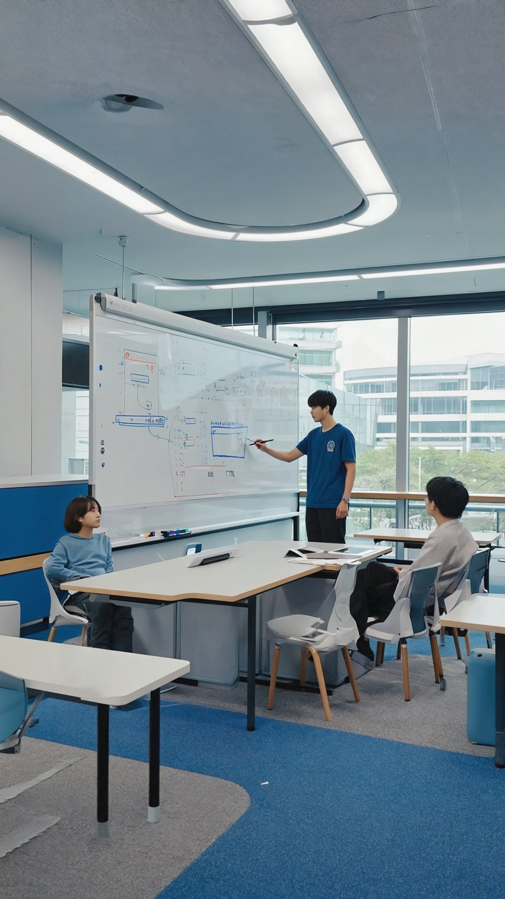
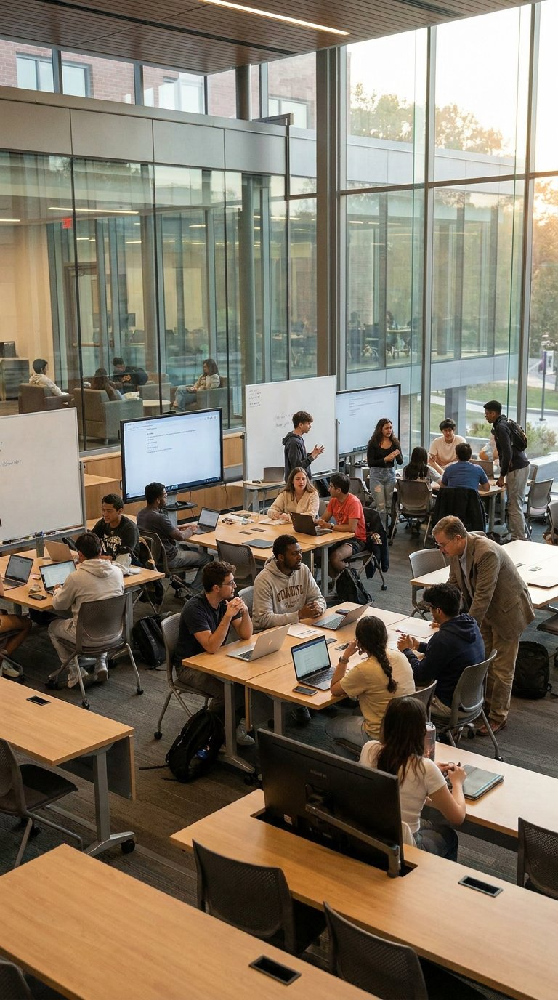
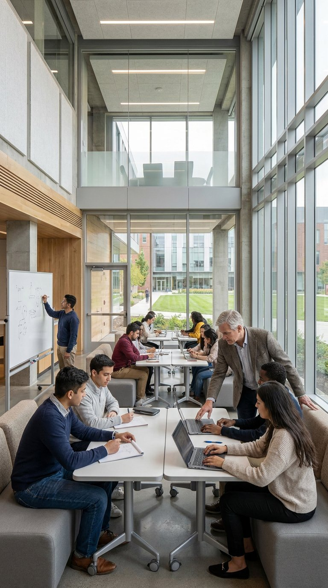

Managed IT Services for Schools & Educational Institutions
What does DTCloudOn do for schools?
DTCloudOn is a managed IT and cybersecurity provider for K-12 schools, districts, private and charter schools, and colleges across the United States. We manage Chromebooks and student devices, run content filtering, protect student records, administer Google Workspace and Microsoft 365 for Education, and keep campus networks fast and reliable. Help desk, device management, and security are delivered remotely, and our technicians come on-site in all 50 states for campus Wi-Fi, cabling, device rollouts, classroom technology, and test-day support.
- Who we serve
- K-12 schools and districts, private and charter schools, colleges and universities
- Requirements we support
- FERPA student privacy, CIPA content filtering and E-Rate eligible network projects
- Core services
- 24/7 help desk, Chromebook management, cybersecurity, campus Wi-Fi and backup
- Service area
- All 50 states, with remote support and on-site technicians nationwide
Last updated
IT Management Built Around Education
Schools and educational institutions depend on reliable technology to support classroom instruction, student learning, administrative operations, and communication. DTCloudOn provides managed IT services, network engineering, cybersecurity, cloud solutions, and ongoing technical support tailored to educational environments.
Our services help schools strengthen student-data protection, manage classroom devices, maintain secure wireless networks, and support educational applications. From Microsoft 365 and Google Workspace administration to Chromebook deployment and network management, we help institutions build reliable and secure IT environments.
DTCloudOn supports schools and educational institutions anywhere in the United States, from a single private school to districts and colleges with many buildings. We handle day-to-day IT and security remotely, send technicians on-site for installations and classroom technology, and help institutions plan technology that supports security, learning, and long-term operational needs.
Reliable IT Support for Teachers, Staff and Students
Trusting your IT needs to DTCloudOn means never having to look away from your crucial duties to try and fix an IT issue. You'll always have someone on hand, around the clock, to take up the task.
Our IT support/help desk option is available every day of the year. We monitor your network when you can't, even outside of school hours. If you have a problem, contact us right away and we'll get started on a timely solution so your teachers and staff can get back to work fast.
Explore our help desk support →
A Plan Made Just for You
We'll develop a custom IT management plan that fits your needs, your goals, and your size, offering complete IT services with expert support. Managed IT services put your technology in expert hands so you can focus on education, while business applications support helps you install and manage your educational software.
We can also assist educational institutions with Chromebook procurement planning, device configuration, deployment, and ongoing management for students, teachers, and administrative staff, along with web content filtering for student devices on and off campus.
View our full list of IT services →Cybersecurity and Student Data Protection for Schools
Schools are responsible for safeguarding sensitive student records and academic data. In the age of a near-constant barrage of cyber threats, that can feel like an overwhelming task.
DTCloudOn offers cybersecurity solutions that protect your student data both internally and externally, with access controls, multi-factor authentication, continuous monitoring, and threat prevention that support FERPA and state student privacy requirements. It's something your students, parents, and staff will all appreciate.
Strengthen your cybersecurity →
Backup, Recovery, and Device Management
Data backup and recovery services keep your test answers, records, and learning materials safe and secure, so critical information can be restored quickly in the event of an outage, hardware failure, or cyber incident.
Combined with centralized device management for student and staff devices, including Chromebook deployment, your institution stays consistent, secure, and ready for learning across every classroom.
Explore backup and recovery →
On-Site IT for Classrooms, Campuses, and School Buildings
Schools need hands-on work that cannot be done from a help desk: hundreds of devices to roll out before the first day, Wi-Fi that holds up when every student logs in at once, and classroom technology that has to work when the bell rings. DTCloudOn sends technicians to schools and campuses in all 50 states, often during summer and school breaks, then supports everything remotely through the school year.
In classrooms and labs
- Chromebook and laptop deployment. Unboxing, enrollment, asset tagging, charging cart setup and distribution for students and staff.
- Interactive displays and classroom technology. Interactive panels, projectors, document cameras and classroom audio installed and configured.
- Computer lab and library setup. Workstations, printers and testing rooms built out and ready for students.
- Online testing readiness. Network and device preparation before state and standardized testing windows, with technicians on hand on test days.
- On-site troubleshooting and device repair. Technician visits for classroom technology, network and device problems that cannot be fixed remotely.
- Summer technology refresh projects. Device refreshes, upgrades and classroom installations completed while buildings are empty.
Across the campus
- Campus and classroom Wi-Fi. Site surveys and high-density access points for classrooms, libraries, gyms and cafeterias.
- Structured cabling and network closets. Ethernet cabling, switches, firewalls, server racks and UPS power across buildings.
- School security cameras. IP cameras for entrances, hallways, parking lots and common areas.
- Door access control. Badge readers and electronic locks for entrances, front offices and secured rooms.
- Phone, intercom and paging systems. VoIP phones and classroom paging for schools and administrative offices.
- E-Rate eligible network upgrades. Assessment, planning, installation and support for Wi-Fi, switching and cabling projects.
Learn what DTCloudOn can do for you.
Contact DTCloudOn today to see how our comprehensive IT services can benefit you and your students — from secure student data to reliable, classroom-ready technology.
Contact Us →Frequently Asked Questions About IT for Schools
Education IT services cover the management, security, and support of the networks, devices, and applications used for teaching, learning, and administration. They keep classroom technology working, protect sensitive student data, and reduce technical disruptions that interrupt instruction.
The main federal law is FERPA, the Family Educational Rights and Privacy Act, which protects the privacy of student education records at schools that receive federal funding. Many states add their own student privacy laws, and apps used with children under 13 must also follow COPPA. IT services support these obligations with access controls, encryption, monitored backups, vendor reviews, and incident response plans, while the school remains responsible for its own policies.
The Children's Internet Protection Act, or CIPA, requires schools and libraries that receive E-Rate discounts for internet access to adopt an internet safety policy and use technology that blocks or filters obscene and harmful content for minors. In practice, most schools use a web content filter that covers student devices both on campus and at home, with reporting for administrators.
E-Rate is the FCC program, administered by USAC, that provides discounts to schools and libraries for internet access and internal network equipment such as Wi-Fi access points, switches, and cabling. Schools must follow E-Rate's competitive bidding rules. DTCloudOn can help schools assess their network, plan eligible upgrades, and install and support the equipment.
Yes. Education IT services manage cloud platforms, learning management systems, and AI-assisted educational applications by ensuring stable performance, secure access, and proper integration across devices and user roles.
Managed IT support relies on proactive monitoring, routine maintenance, and rapid response. Potential issues are identified and resolved early, reducing outages that could interrupt classroom instruction, online testing, or administrative operations.
Yes. Education IT services can include procurement guidance, configuration, enrollment, lifecycle management, and ongoing support for student and staff devices. This typically covers Chromebook deployment through Google Admin, policy management, and repair or replacement workflows to keep every classroom consistent and secure.
Yes. DTCloudOn serves schools, districts, and colleges in all 50 states with both remote and on-site services. Help desk, device management, content filtering, and cybersecurity are delivered remotely, and technicians come on-site for campus Wi-Fi, network cabling and closets, Chromebook deployments, interactive displays and classroom technology, computer labs, test-day support, security cameras, door access control, phone and paging systems, summer refresh projects, and hardware troubleshooting.
IT service plans are designed to scale as student enrollment, staff size, and digital tool usage increase. Infrastructure, security controls, and support capacity can be adjusted without requiring major internal staffing changes.
Cybersecurity is a core component, because schools are frequent targets of ransomware and phishing. It focuses on protecting student records, academic data, and internal systems from outside attacks and internal misuse, with continuous monitoring and response to limit disruption.
By outsourcing IT management and support, educators are not required to troubleshoot technical issues. Teaching staff can concentrate on instruction and student engagement while IT operations are handled by dedicated specialists.
Ready to Upgrade Your School's IT?
Talk to a DTCloudOn specialist who understands the education industry — from student-data security to classroom-ready devices and 24/7 support.
Request a Free Consultation →